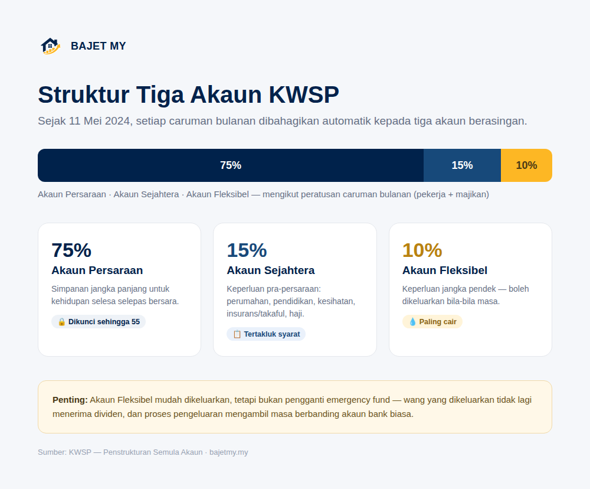

Sejak 11 Mei 2024, KWSP menstruktur semula akaun ahli daripada dua akaun kepada tiga akaun: Akaun Persaraan, Akaun Sejahtera dan Akaun Fleksibel. Setiap akaun mempunyai tujuan dan syarat pengeluaran yang berbeza.

Bagaimana caruman dibahagikan?
Setiap caruman bulanan (pekerja + majikan) dibahagikan secara automatik mengikut peratusan tetap:
| Akaun | Peratusan Caruman | Tujuan |
|---|---|---|
| Akaun Persaraan | 75% | Simpanan jangka panjang untuk persaraan |
| Akaun Sejahtera | 15% | Keperluan pra-persaraan jangka sederhana |
| Akaun Fleksibel | 10% | Keperluan kewangan jangka pendek |
Akaun Persaraan (75%)
Akaun ini bertujuan mengumpul dan meningkatkan tahap simpanan ahli untuk kehidupan selesa selepas bersara. Ia sebahagian besarnya dikunci sehingga umur 55, kecuali dalam keadaan terhad seperti hilang upaya kekal, berhijrah secara kekal ke luar negara, atau kematian.
Akaun Persaraan ialah "teras" simpanan KWSP anda — jangan anggap ia sumber kecairan untuk kegunaan harian.
Akaun Sejahtera (15%)
Akaun ini bertujuan memenuhi keperluan kitaran hidup pra-persaraan jangka sederhana, yang turut menyumbang kepada kesejahteraan persaraan. Pengeluaran daripada Akaun Sejahtera dibenarkan untuk tujuan tertentu (tertakluk kepada terma dan syarat KWSP), antaranya:
- Perumahan
- Pendidikan
- Kesihatan
- Perlindungan insurans/takaful
- Haji
- Pengeluaran umur 50
Akaun Fleksibel (10%)
Akaun ini direka untuk memenuhi keperluan kewangan jangka pendek ahli. Simpanan dalam Akaun Fleksibel boleh dikeluarkan pada bila-bila masa, tertakluk kepada terma dan syarat KWSP — menjadikannya akaun paling cair berbanding dua akaun lain.
Nota: Kebolehcairan ini bermakna Akaun Fleksibel mudah digunakan, tetapi bukan bermaksud ia patut dihabiskan sewenang-wenangnya. Wang yang dikeluarkan hari ini bermakna kurang wang yang berkembang dengan dividen untuk masa depan.
Kenapa struktur ini penting untuk perancangan anda?
Kalkulator KWSP Bajet MY menggunakan pecahan 75% / 15% / 10% ini untuk menganggarkan caruman masa depan anda ke setiap akaun. Memahami tujuan setiap akaun membantu anda:
- Menilai sama ada anda perlu simpanan tambahan di luar KWSP untuk kecemasan (Akaun Fleksibel bukan pengganti emergency fund berasingan)
- Merancang penggunaan Akaun Sejahtera dengan bijak untuk keperluan besar seperti perumahan atau pendidikan
- Fokus membiarkan Akaun Persaraan berkembang tanpa gangguan untuk jangka panjang
Akaun Fleksibel bukan pengganti emergency fund
Oleh kerana Akaun Fleksibel boleh dikeluarkan bila-bila masa, sesetengah orang menganggapnya sebagai dana kecemasan. Ini perlu dilihat dengan berhati-hati:
- Proses pengeluaran KWSP mengambil masa untuk diproses — ia tidak secair akaun bank biasa
- Wang yang dikeluarkan tidak lagi menerima dividen tahunan
- Jika Akaun Fleksibel kosong, anda tiada penampan tambahan di luar simpanan bank
Emergency fund yang disimpan berasingan dalam akaun bank kekal lebih sesuai untuk kecemasan segera berbanding bergantung sepenuhnya kepada Akaun Fleksibel.
Ringkasan
KWSP kini beroperasi dengan tiga akaun: Akaun Persaraan (75%) untuk jangka panjang dan dikunci sehingga 55 tahun, Akaun Sejahtera (15%) untuk keperluan pra-persaraan seperti perumahan dan pendidikan, dan Akaun Fleksibel (10%) yang boleh dikeluarkan bila-bila masa untuk keperluan jangka pendek.
Fahami tujuan setiap akaun supaya anda boleh merancang penggunaan simpanan KWSP dengan lebih bijak, bukan sekadar mengeluarkan kerana ia boleh dikeluarkan.
Sumber
- KWSP — Penstrukturan Semula Akaun (Account Restructuring)
- KWSP — Akaun Fleksibel: Maklumat Lanjut